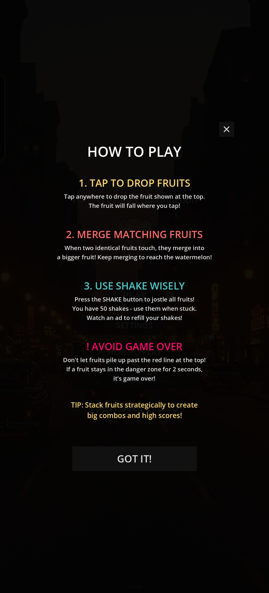
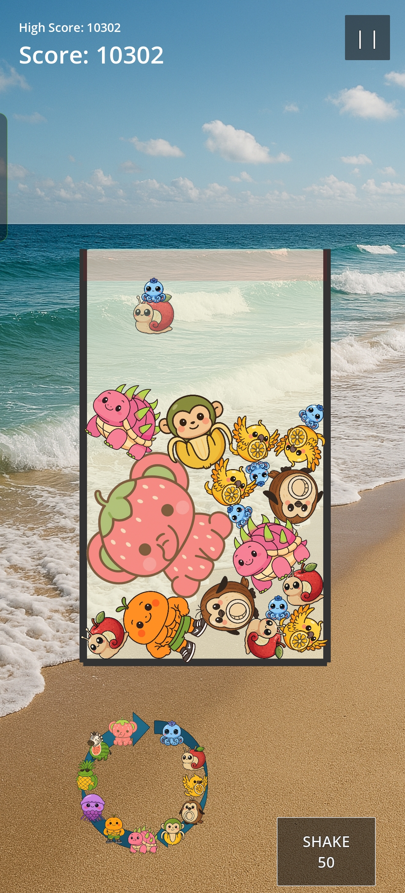
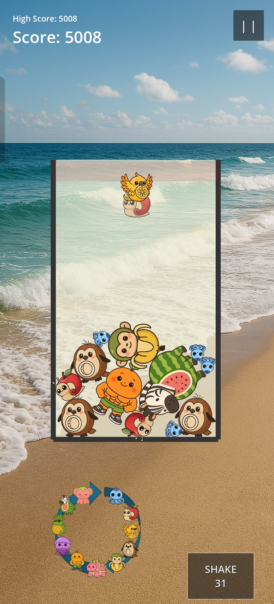

Embrace the Chaos
Italian BrainRot Tutti Fruttini Combinasion is a physics‑based fruit‑merging puzzle game where players drop fruits into a container; identical fruits merge into larger ones. The goal is to reach the highest fruit tier without overflowing the playfield.
Features
- Real‑time 2D physics puzzle with soft, bouncy interactions
- A casual merge‑on‑collision fruit merging game
- Randomized fruit generation with preview
- Game‑over detection via top boundary
- Shake mechanic with limited uses (50 max)
- Rewarded ad to refill shake counter
Screenshots



Support
Need help? Contact us at support@bonsaidotdot.com.